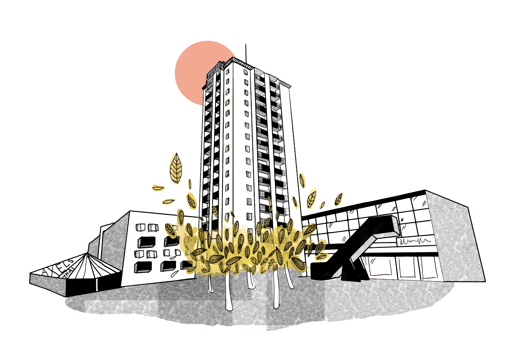
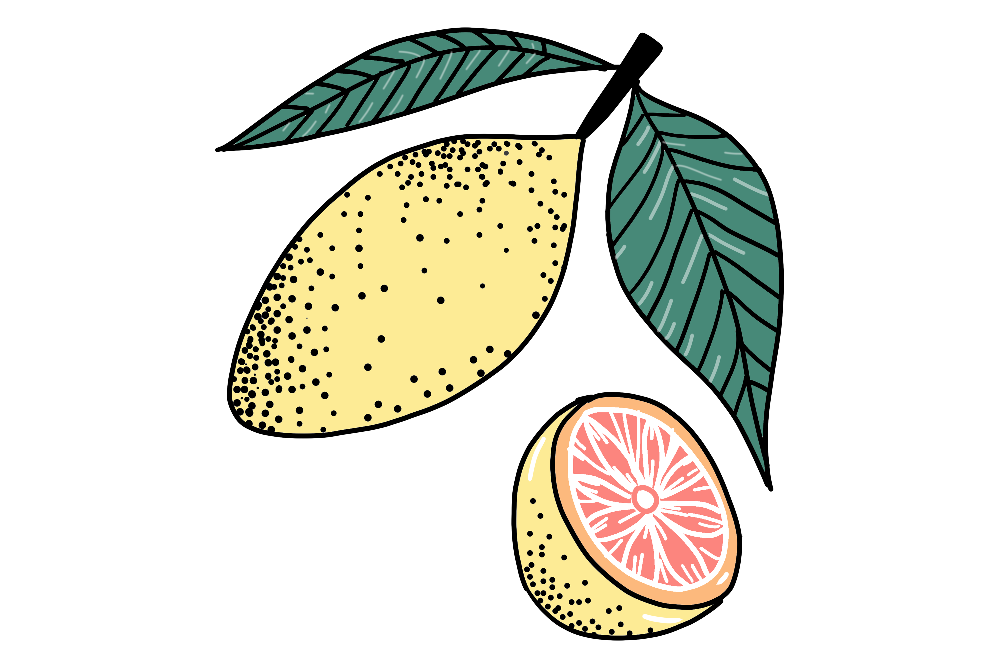

I am one of the illustrators chosen for the jubilee celebration of Gothenburg City. The city is turning 400!
Hi! I'm Mia Herman
Web development. Graphic Design. Illustrator.
Jack of all trades.
PORTFOLIO

I was chosen as the illustrator of the year for the Picknic festival in 2015. I designed a tote bag as well as the program and overall graphic profile.

While I've been illustrating for years, I've recently dwelved into the world of programming as of the fall of 2020. This website is under construction!
RESUME
EDUCATION
HVE, Front End Development
Medieinstitutet, Sweden
Bachelors degree
Cultural Studies with a major in Art History
Gothenburg University, Sweden
Diploma, Project Management
Martin College, Australia
SOFTWARE &
TECHNICAL SKILLS
Adobe Photoshop
Adobe Illustrator
Visual Studio Code
Adobe Premiere
Final Cut Pro
HTML
CSS
Javascript
LANGUAGES
Swedish
English
Farsi/Dari
Un petit peu francais
SOFT SKILLS
Excellent social skills
Focused and dependable
Team oriented
Bonus: Moderately funny!